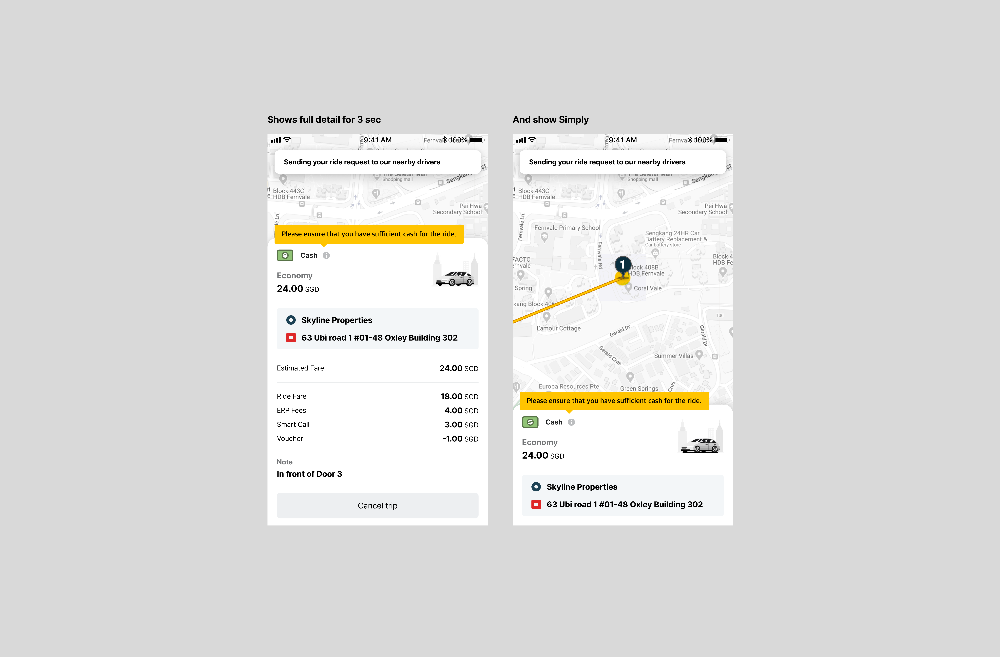
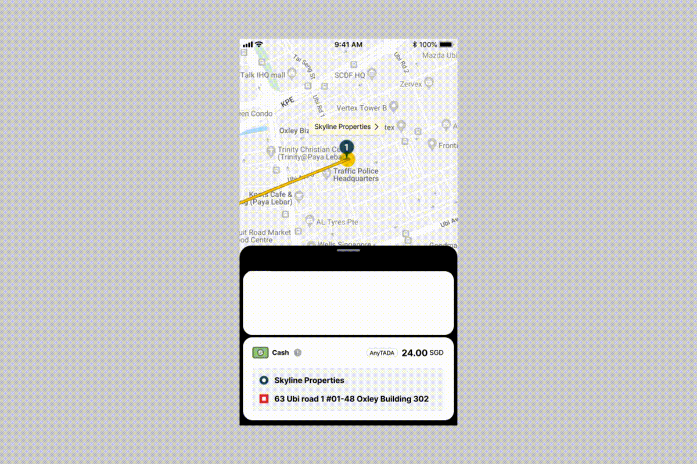
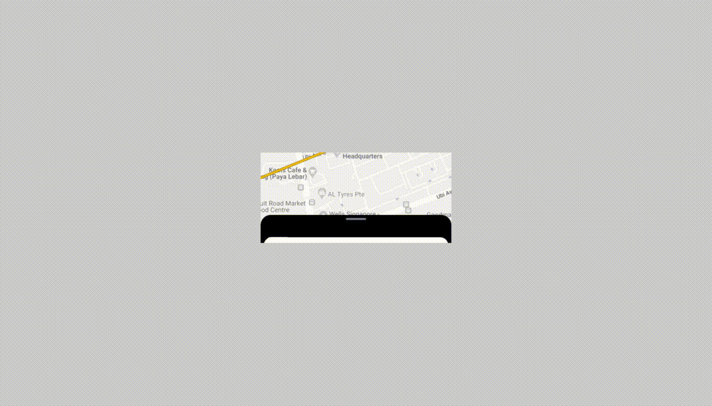
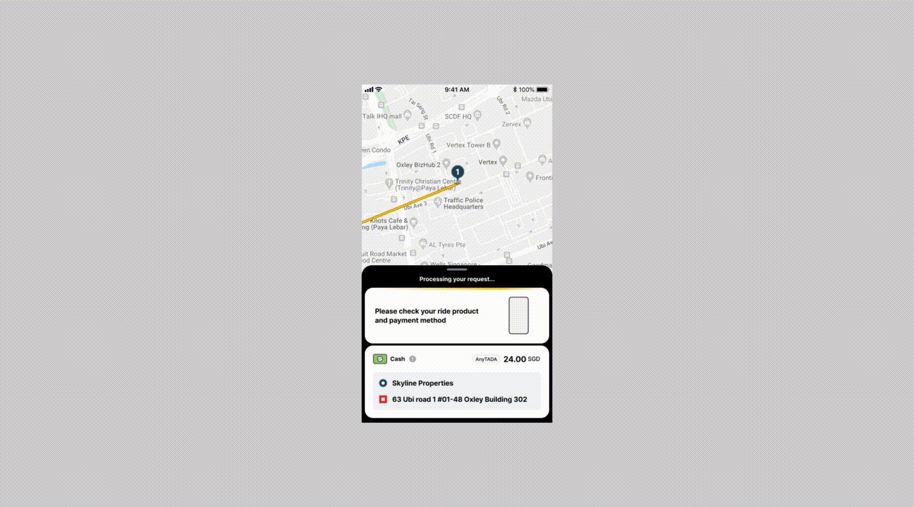

Driver Matching Experience Improvement
운전기사 매칭을 기다리는 시간은 사용자가 가장 불안함을 느끼는 순간입니다. 기존 Pending 화면은 정적인 UI로 구성되어 있었고, 현재 어떤 과정이 진행되고 있는지 충분히 전달하지 못했습니다. 본 프로젝트에서는 드라이버 매칭 과정을 더욱 직관적으로 전달하고, 기다리는 시간을 긍정적인 경험으로 바꾸기 위해 Pending 화면의 UX와 UI를 전면 개선했습니다.

Overview
기존 Pending 화면을 인터랙션 중심의 경험으로 개선하여 사용자의 불안감을 줄이고, 서비스에 대한 신뢰를 높이는 것을 목표로 진행한 프로젝트입니다. Driver Matching 상태를 보다 명확하게 전달하기 위해 Animation, Status Indicator, Information Message를 새롭게 설계했으며, 운영팀이 직접 콘텐츠를 관리할 수 있는 확장 가능한 구조까지 함께 고려했습니다.

Problem
사용자 테스트와 경쟁 서비스(Grab, Gojek) 분석을 진행하면서 기존 Pending 화면에는 세 가지 핵심 문제가 있었습니다.
01. 현재 Driver Matching이 어떤 단계까지 진행되었는지 알기 어려웠습니다.
02. 화면이 지나치게 정적이어서 사용자는 앱이 정상적으로 동작하는지 불안함을 느꼈습니다.
03. 기다리는 동안 전달할 수 있는 다양한 운영·마케팅 메시지를 노출할 수 있는 구조가 없었습니다.

Solution
사용자가 기다리는 시간을 단순한 Waiting이 아닌 Interactive Experience로 전환하는 것을 목표로 UX를 재설계했습니다.
• 기존 Pin과 Radar는 단순한 정적 이미지였습니다. 경쟁 서비스 분석 결과를 바탕으로 Pin Motion과 Radar Expansion Animation을
적용하여 Driver Matching이 진행되고 있다는 느낌을 시각적으로 전달했습니다.
• 기존 Status는 지도 상단에 분산되어 있어 정보 전달력이 떨어졌습니다. 이를 하단 정보 영역으로 이동시키고 Progress Animation을 적용하여 현재 진행
상태를 한눈에 이해할 수 있도록 개선했습니다.
• 새롭게 추가한 Information 영역입니다. TADA는 여러 국가에서 운영되는 서비스였기 때문에 운영팀이 국가별 콘텐츠를 자유롭게 관리할 수 있도록 확장성을
고려했습니다. Admin에서 텍스트와 애니메이션을 등록·수정·삭제할 수 있도록 설계했습니다.
• 애니메이션의 완성도와 앱 성능 사이의 균형도 함께 고려했습니다. Low / High Fidelity Animation을 비교 테스트한 결과, Low Fidelity가
더 적합하다고 판단했습니다. 또한 실제 노출 크기는 80px이지만 제작은 320px 기준으로 진행하여 화면 품질 저하를 최소화했습니다.

Outcome
• Driver Matching 과정을 더욱 직관적으로 전달
• Waiting Experience 개선
• 운영 콘텐츠 노출 영역 확보
• 국가별 콘텐츠 운영 효율 향상
• 기존 Design System과 자연스럽게 통합

What I Learned
이 프로젝트를 위해 싱가포르 오피스를 방문하여 Grab, Gojek 등 주요 경쟁 서비스를 직접 분석하고 사용자 테스트를 진행했습니다. 그 과정에서 작은 인터랙션 하나도 사용자의 심리적 안정감과 서비스 신뢰도에 큰 영향을 준다는 사실을 확인할 수 있었습니다. 또한 좋은 아이디어만으로는 충분하지 않았습니다. 실제 서비스에 적용하기 위해서는 PM, 엔지니어와 지속적으로 논의하며 사용성, 기술적 제약, 운영 효율성까지 함께 고려해야 했습니다. 이 프로젝트를 통해 인터랙션은 단순한 시각 효과가 아니라 사용자의 불확실성을 줄여주는 UX라는 점을 다시 한번 경험할 수 있었습니다.